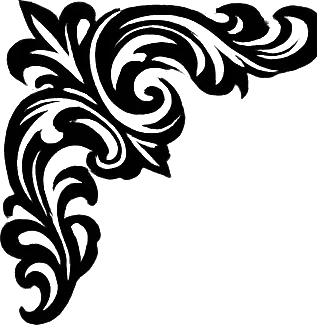
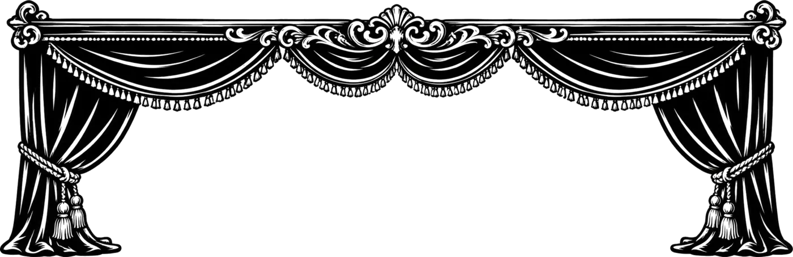
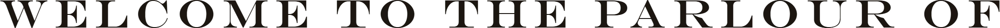
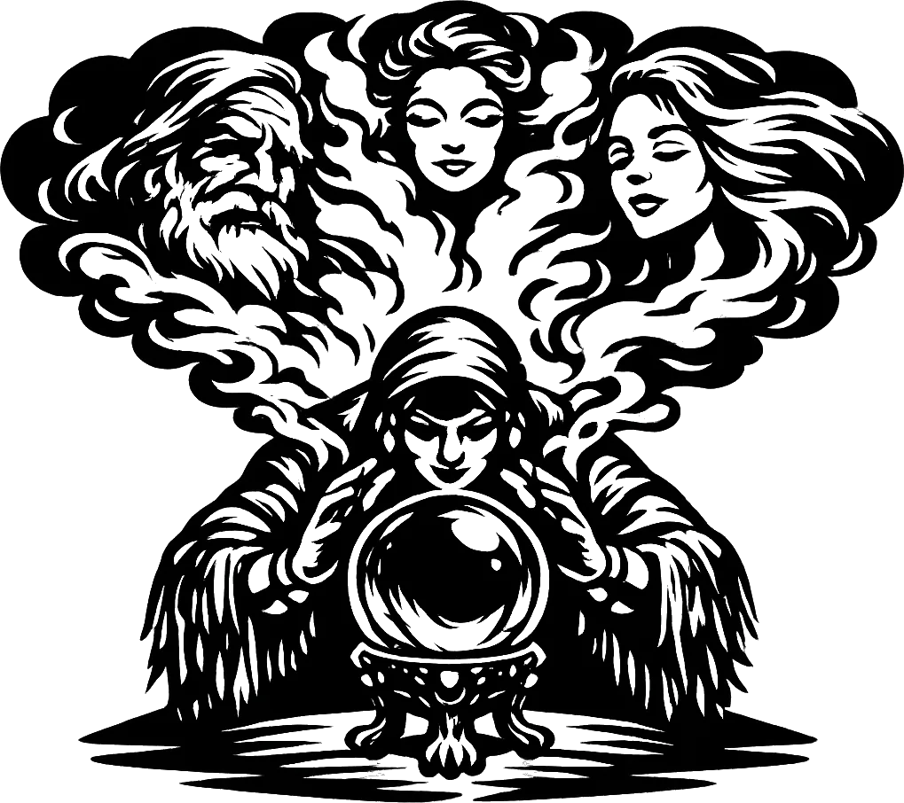
“I should like to speak with Machiavelli.”
The smoke gathers. The Madame does her work. Your guest arrives.
Argue with them. Scheme with them. Ask what they never wrote down. They answer in their own voice — not from a script.
You have read what they wrote. You have argued with them in your head on the walk home. Madame Whisper is that argument with the other chair filled — by a Florentine schemer, by a general who won before the fighting started, by a philosopher who will not let a loose definition pass. Name anyone. She will fetch them.
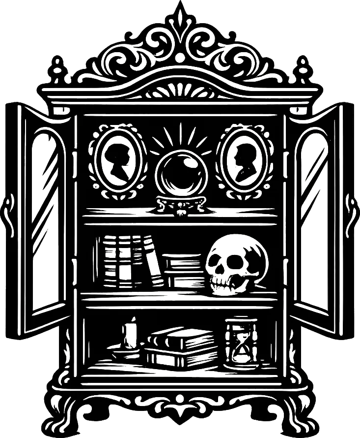
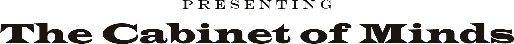
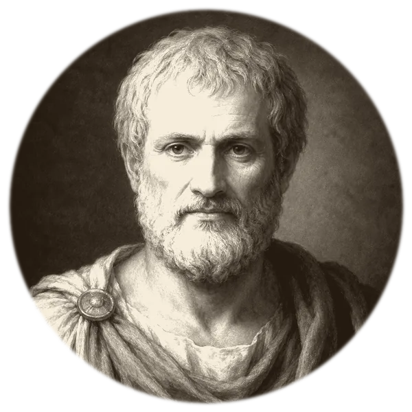
Bring him a question you think you have settled. He will take it apart into the four things you actually meant.
Argue power with the man who wrote the book on it. He will not flatter you, and he will not pretend the question is easy.
Bring him a conflict — a campaign, a rivalry, a negotiation. He will show you where it was decided, long before the fighting.
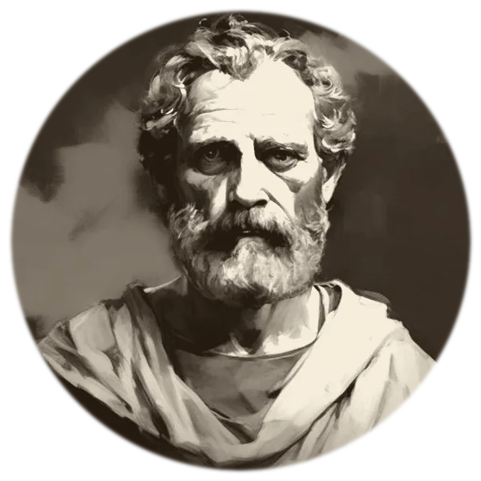
Ask him what a thing really is. Then discover you have agreed to something you did not intend, three questions ago.
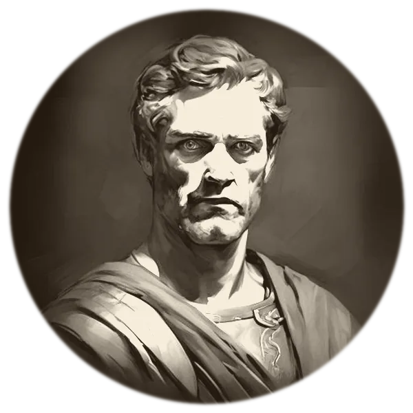
He had the world at thirty and no idea what to do next. Ask him whether it was worth what it cost.
Printer, diplomat, and the most useful man in any room. Ask him how to get something difficult agreed to.
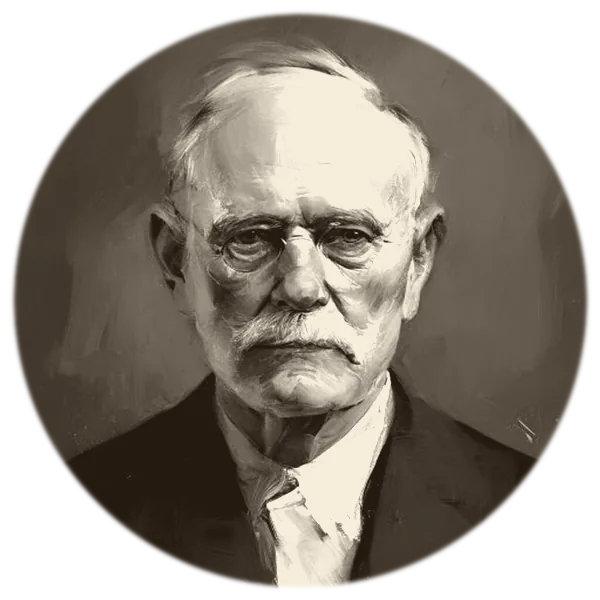
Tell him the dream you still remember. He will want to know what you have refused to look at.
The parlour is not yet open. Leave your card and you will be sent word the evening it is — before it is announced anywhere else. Founding Members are seated first, and there are only so many chairs.
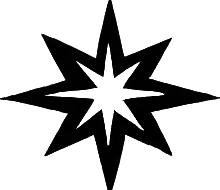
“The dead are gone.